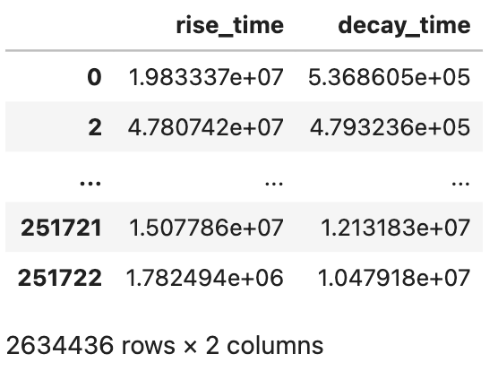
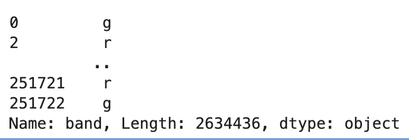
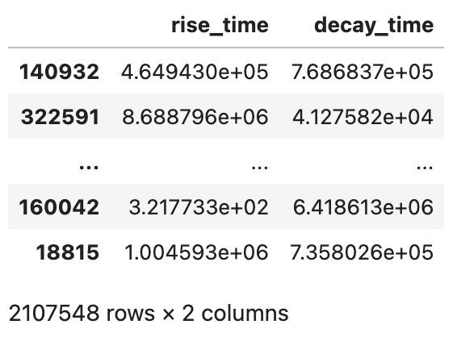
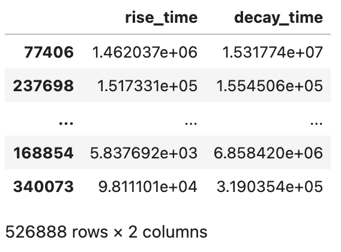

Overview
Data Prep
Since regression will predict labels of observations within the dataset, labeled numeric data is required. In the context of astrophysical transient detections, one useful label that is presented in the data is the photometric band of each observation. These bands (g, r, i) describe the wavelength ranges that each transient detection was observed in. In particular, these correspond to 400-550nm, 550-700nm, and 700-850nm, respectively. These are measured using transmission curves, which ultimately come from optical inference filters built into the instrument. All of these wavelength ranges are found in the optical/visible range of the electromagnetic spectrum, with a small fraction occupying the near-infrared range. The goal of training a decision tree here is to see whether or not the photometric bands of transient detections can be predicted based on transient rise/decay times. To obtain more sky coverage than before, 10 randomly-selected partitions will be used to train the NB classifier, rather than the first 10 partitions of data which occupy a narrow region on the sky. A snapshot of the data is shown below in Figure 1, which includes the transient rise/decay times and the photometric bands (used as labels). Figure 2 shows the labels associated with this dataset, and Figures 3 and 4 show the datasets split into tranining and testing data, respectively. This data is a result of the data cleaning that was described in the DataPrep_EDA tab. The full 10 partition dataset contains 2,634,436 rows. Finally, in order to construct a decision tree, the data need to be split into testing and training datasets. This was accomplished by allocating 20% of the dataset to testing data, and the other 80% to training data. The split was chosen randomly, but can be reproduced using a random_state identifier. Finally, the split attempts to keep roughly the same proportions of each label in both datasets.




- Lightcurves ("s3://ipac-irsa-ztf/ztf/enhanced/dr24/lc/hats")
Code
The code used for this project can be found under the "Regression" header in the following jupyter notebook, which has been pushed to this github repository.
View Jupyter NotebookResults
Conclusions